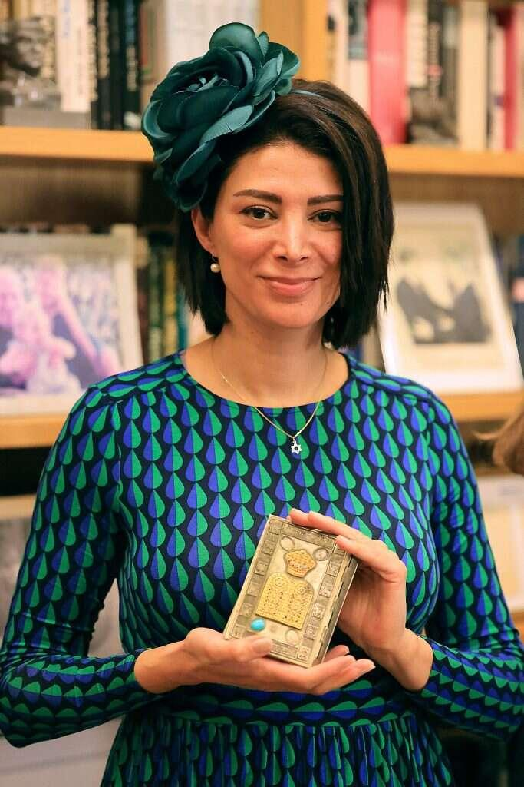
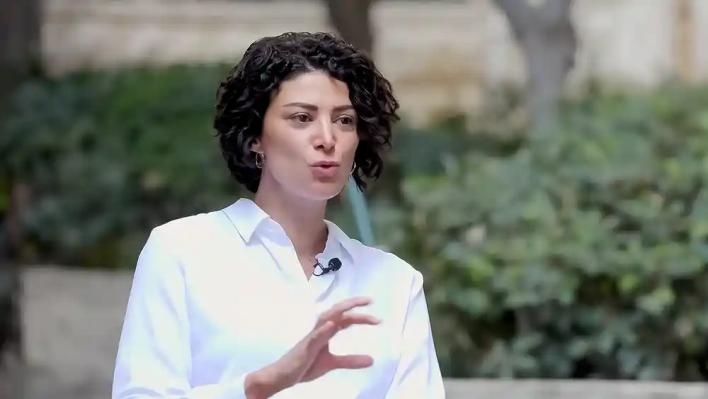
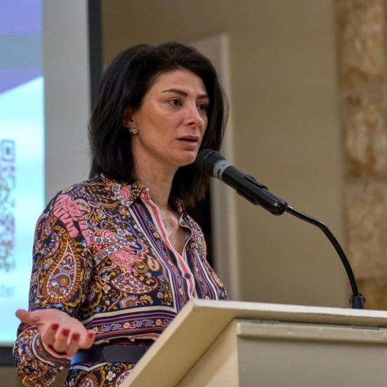
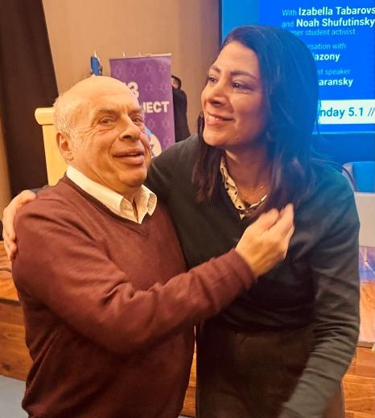

En tant que femme née et élevée au Moyen-Orient, je suis profondément touchée par ce qui se passe en Iran. J'ai vécu quinze ans en Europe, non pas par goût pour le climat ou la cuisine européenne. Je vous prie de ne pas vous offenser. Mon cœur est tourné vers la chaleur épicée de la Méditerranée et les rêves de douceur méditerranéenne. J'y ai renoncé pour la sécurité, pour une vie dans un pays où les hommes ne peuvent pas se promener librement dans mon espace.
Au Liban, nous avons grandi sous l'ombre de la guerre, une guerre qui, parfois, nous terrifiait. Libérer Jérusalem. C'était leur devoir sacré, disaient-ils. La plupart n'étaient même pas croyants, et pourtant ils adhéraient au mouvement « pro-palestinien ». Ils ne voyaient aucun inconvénient à ce que les islamistes prennent les devants, jusqu'à ce que ces mêmes islamistes commencent à dicter les règles. Jusqu'à ce que l'économie libanaise s'effondre et que les slogans se transforment en chaînes.
Nous avons déménagé en Syrie quand j'avais dix-huit ans. Mes sœurs en avaient dix-sept et quatorze. Mon père, qui avait quitté le pays adolescent, décida de rentrer lorsque l'ophtalmologiste Bachar el-Assad prit le pouvoir. Comparé à son père, il mit en place des mesures considérées comme révolutionnaires: la banque privée, les télécommunications, la numérisation, et même une certaine forme de dissidence, avec le retour autorisé de quelques exilés. Le boom économique qui s'ensuivit nous incita à quitter le Liban.
Pour nous, les filles, et pour ma mère, qui avait alors trente-huit ans, la Syrie fut un choc culturel. Visiter Damas quelques jours pour l'Aïd était une chose. Y vivre en était une autre. Se promener seule dans les rues donnait l'impression d'errer dans une jungle. Parfois, nous rencontrions la bête. Des hommes nous abordaient, soulevaient nos jupes, nous pinçaient les cuisses, nous touchaient. Ils nous suivaient dans les marchés et nous collaient délibérément. Des policiers, et il faut le préciser, nous faisaient des avances, tenant des propos bien pires que ceux tenus à l'encontre des passants que nous avions envie de dénoncer. Des hommes s'exhibaient devant nous dans les transports en commun, dans les ruelles de la vieille ville et en plein jour dans les rues les plus chics de la capitale. L'une de mes sœurs pleurait quand cela arrivait. Ma cadette et moi avons vite appris à nous avancer vers ces hommes et à les frapper de toutes nos forces, sans broncher. Personne ne nous a aidées. On nous regardait comme si nous l'avions cherché parce que nous ne portions pas le voile.
Nous avions fréquenté une école catholique française au Liban, toujours vêtues d'uniformes blancs et bleu marine – un modèle de conservatisme, même dans nos moments les plus excentriques. Mais cela ne suffisait pas aux soi-disant « musulmans pieux », ces mêmes hommes qui tentaient de soulever nos jupes à la sortie de la mosquée. Ces mêmes hommes qui disaient à notre père de nous obliger à porter le voile après avoir essayé de nous toucher la poitrine en nous proposant de nous emmener.
Je connais l'hypocrisie. Elle m'a frappée de plein fouet. Mes deux grands-mères – l'une chiite, l'autre sunnite, l'une libanaise, l'autre syrienne – ont été mariées avant l'âge de quinze ans. Ensemble, elles ont eu sept filles. Leurs vies étaient façonnées par des hommes qui dictaient le cours des événements, tandis qu'elles subissaient en silence, portant l'obéissance comme une marque de naissance. Je me souviens de la tristesse dans leurs yeux, emplis d'une résignation silencieuse. C'est notre génération, les petites-filles, qui a brisé le cycle de dépendance et d'asservissement. Surtout mes sœurs et moi, car nous sommes parties. Nous avons quitté le Moyen-Orient, et plus précisément, la jungle syrienne.
Quand je vois ce que le régime des mollahs iraniens fait subir aux jeunes filles aujourd'hui, j'entends le rugissement de mes grands-mères, la rage qu'elles n'ont jamais pu exprimer. Quand j'ai appris ce qui est arrivé aux filles qui allaient danser à Nova, j'ai pensé à ma sœur fragile, qui adore les festivals de musique, et j'ai remercié le ciel de l'avoir replantée en Europe. Quand j'entends le témoignage d'une jeune Druze de quatorze ans violée chez elle à Soueïda par des islamistes alors qu'elle appelait son père, je me souviens que la survie dans notre monde dépend souvent du hasard, d'avoir un père plus aimant ou un frère plus courageux.
Au Moyen-Orient, la survie dépendait souvent d'une porte restée fermée aux brutes et à leur doctrine. Quand je vois les visages de ces femmes kurdes récemment assassinées, maltraitées et jetées du haut d'immeubles par les prétendus libérateurs de la République arabe syrienne, je pense à mes sœurs et à moi. Nous sommes parties. Nous avons survécu. Elles sont restées. Elles ont pris les armes pour protéger leurs villages, leurs familles, leur dignité.
Les avons-nous abandonnées? Dieu seul sait combien il était difficile de partir, et combien il était impossible de rester. L'extrémisme, qu'il soit chiite ou sunnite, ne nous a apporté que la misère. Les hommes des deux camps ont refusé à leurs sœurs, leurs épouses et leurs filles le droit de s'épanouir, de poursuivre leurs rêves, d'aller à l'université, de devenir indépendantes. Ils leur ont refusé la liberté de choisir leur conjoint. Et quand les mariages échouaient, ils leur ont refusé le divorce, car la dépendance économique était leur seul lien. Les femmes vivaient dans l'ombre des hommes, à leur merci. Je suis l'une des rares de ma famille à avoir brisé ces chaînes. Mon père m'a appris comment faire. Les règles qui me paraissaient absurdes étaient sans importance. Voilà pourquoi l'Iran compte pour moi. Aujourd'hui, je me sens proche des Iraniennes qui rejettent le sous-développement.
Dans un Moyen-Orient marqué par des décennies de conflit, Rawan Osman émerge comme une voix dissonante et courageuse. Son parcours, de jeune Syro-Libanaise élevée dans l’antisémitisme à fervente défenseure d’Israël et du peuple juif, offre un témoignage saisissant sur la possibilité de transcender les clivages historiques et culturels profondément ancrés dans la région. Regardez l’interview réalisée par Cathy Choukroun sur « Studio Qualita ».
17 Octobre 2024

Née dans une famille musulmane au Liban, d’un père sunnite et d’une mère chiite, Rawan Osman a grandi dans un environnement profondément hostile à Israël et aux Juifs. Son éducation, reçue dans une école catholique française au Liban, l’a exposée dès son plus jeune âge à ce qu’elle qualifie aujourd’hui de « mensonges » sur Israël et le peuple juif.
« Tout ce que nous savions d’Israël et des Juifs était inventé », explique-t-elle. On lui enseignait que les Juifs, venus d’Europe, avaient « volé » la Palestine, une narrative répandue dans de nombreux pays arabes. Cette éducation, combinée à l’influence du Hezbollah au Liban, a façonné sa vision du monde pendant ses jeunes années.
Le choc de la réalité
Le tournant dans la vie de Rawan s’est produit lorsqu’elle a déménagé à Strasbourg, en France, en 2011. Fuyant la guerre civile en Syrie, elle est arrivée avec l’intention initiale d’apprendre à gérer un bar à vin. Cependant, son installation dans le quartier juif de Strasbourg allait bouleverser sa vision du monde.
« Au début, j’étais terrifiée », confie-t-elle, « parce que j’avais appris qu’ils étaient nos ennemis, qu’ils nous détestaient, qu’ils voulaient même nous tuer. Évidemment, ce n’était pas le cas ».
Cette confrontation avec la réalité a été le catalyseur d’une profonde remise en question de ses croyances.
Un processus de transformation
La transformation de Rawan ne s’est pas faite du jour au lendemain. Elle a poursuivi ses études à l’Université de Heidelberg en Allemagne, se spécialisant en hébreu moderne et en études juives. Cette immersion académique lui a permis d’approfondir sa compréhension de la culture juive et de l’histoire d’Israël, renforçant sa conviction de la nécessité d’un dialogue interculturel.
« J’ai mis toutes mes idées à l’épreuve », explique-t-elle. « J’ai étudié et travaillé avec des Juifs et même avec des Israéliens. Ils m’ont soutenue, ils soutiennent tout le monde. J’ai compris qu’ils ne nous en voulaient pas ».
L’émergence d’une activiste
Aujourd’hui, Rawan Osman est devenue une militante influente, utilisant les réseaux sociaux pour combattre l’antisémitisme et promouvoir une meilleure compréhension d’Israël dans le monde arabe. Elle a fondé « Arabs Ask », une plateforme novatrice permettant aux Arabes de poser des questions et de remettre en question leurs idées préconçues sur le judaïsme et Israël. Son engagement va au-delà de l’éducation. Après les attaques du 7 octobre 2023 par le Hamas, Rawan a pris la décision courageuse de rendre public son désir de se convertir au judaïsme, un choix personnel qu’elle avait gardé secret jusque-là. « Quand je le raconte, ça donne de l’espoir et de la force aux jeunes juifs » explique-t-elle.
La lutte contre la désinformation
Rawan insiste sur le fait que son combat n’est pas seulement pour défendre Israël, mais pour promouvoir la vérité et la paix dans toute la région. Elle critique fermement les organisations comme le Hamas et le Hezbollah, les accusant de perpétuer la haine et la violence à travers la désinformation.
« Des centaines de milliers ont dû mourir à cause de cette haine, à cause de ces mensonges », affirme-t-elle. « C’est pour cela que c’est super important après le 7 octobre d’intervenir et de dire ça suffit ».
Défis et menaces
Le parcours de Rawan n’est pas sans risques. Elle reçoit des menaces régulières et a perdu de nombreux amis à cause de ses positions. Sa famille a eu du mal à accepter sa transformation, en particulier son désir de se convertir au judaïsme et de s’installer en Israël.
Cependant, elle reste déterminée: « Pour moi, ça vaut la peine. C’est super important. J’ai perdu plein d’amis, mais ce n’est pas grave parce que j’ai aussi fait beaucoup d’amis en Israël et partout dans le monde ».
Une voix pour les femmes du Moyen-Orient
L’engagement de Rawan s’étend également à la défense des droits des femmes dans le monde arabe. Ayant eu l’opportunité de s’exprimer à la Knesset, le parlement israélien, elle s’est fait la voix de celles qui n’ont pas eu la chance de vivre librement ou de poursuivre leurs rêves.
« J’ai eu cette chance d’être la voix de mes grand-mères, de mes tantes, de mes amies qui ont été violées, qui ont été violentées, qui n’avaient pas le droit d’avoir une éducation, qui devaient toujours subir les décisions de leurs époux », raconte-t-elle avec émotion.
Une vision d’espoir pour l’avenir
Malgré les défis, Rawan Osman reste profondément optimiste quant à l’avenir. Elle croit fermement que le monde finira par comprendre l’importance d’Israël et du judaïsme pour l’humanité. Son rêve est de s’installer en Israël, qu’elle considère comme sa véritable patrie.
« Je le sais au fond de mon cœur qu’on va réussir, qu’à la fin tout le monde – arabes, musulmans, chrétiens, à l’Occident, tout le monde va comprendre que les Juifs d’Israël, c’est notre trésor. Le judaïsme et Israël sont une lumière pour les nations », affirme-t-elle avec conviction.
Le parcours extraordinaire de Rawan Osman est un témoignage puissant de la possibilité de surmonter les préjugés et la haine. Son activisme, bien que controversé, offre une perspective unique sur le conflit israélo-arabe et souligne l’importance du dialogue et de la compréhension mutuelle. Alors que les tensions persistent au Moyen-Orient, des voix comme celle de Rawan Osman sont plus que jamais nécessaires pour construire des ponts entre les communautés et promouvoir une paix durable. Son message de courage, de vérité et d’espoir résonne bien au-delà des frontières du Moyen-Orient, inspirant ceux qui cherchent à transcender les divisions et à construire un avenir de compréhension mutuelle.

Je parle en étrangère.
Une Juive errante.
Une personne qui se sent à la fois partout et nulle part.
Une personne qui n'a pas grandi dans la certitude, mais dans le questionnement.
Et pourtant – Jérémie vit en moi.
Alors je demande, humblement mais sans ambages: Puis-je m'adresser à mon peuple élu?
Et puis-je oser appeler l'État d'Israël le Troisième Temple?
Avant que certains ne s'emportent, laissez-moi m'expliquer.
Dans la théologie juive classique, le Troisième Temple est clairement défini: un Beit HaMikdash physique, bâti sur le Har HaBayit, avec un service sacrificiel renouvelé, liés à la rédemption messianique.
Selon cette définition — et je le dis clairement —, l'État d'Israël n'est pas le Troisième Temple.
Mais le judaïsme n'a jamais été une foi uniquement fondée sur de la pierre.
Lorsque le Premier Temple s'est effondré, nous n'avons pas disparu.
Lorsque le Second Temple a brûlé, nous ne nous sommes pas dissous dans l'histoire.
Nous nous sommes adaptés – non pas en abandonnant la sainteté, mais en la perpétuant.
À Yavneh, la Torah est devenue un sanctuaire portatif.
Le foyer juif est devenu un mikdash me'at, un petit temple.
Jérusalem est restée notre axe spirituel, même lorsqu’elle se tenait en ruines.
Le judaïsme a appris à survivre sans murs, sans autels, sans sacrifice.
Mais jamais sans responsabilité.
Ainsi, lorsque j'affirme qu'Israël est le Troisième Temple, je ne fais pas une déclaration halakhique.
Je fais une déclaration civilisationnelle, morale et historique.
Qu'était réellement le Temple?
Le Temple n'était pas qu'une simple architecture.
Il était le centre de la souveraineté, de la responsabilité et de l'unité juives.
C'était le lieu où convergeaient les destins juifs.
C'était le lieu où la sainteté et le pouvoir étaient contraints de se rencontrer.
Et lorsque cette réunion échoua —quand le rituel remplaça l'éthique, quand la faction supplanta la fraternité — le Temple est tombé.
Le Talmud n'accuse pas Rome seule.
Il ne se retranche pas derrière la géopolitique.
Il nomme le péché avec une précision chirurgicale: sin'at chinam — la haine sans fondement.
Le Second Temple fut détruit non pas parce que les Juifs étaient faibles, mais parce qu'ils étaient divisés.
Aujourd'hui, le destin du peuple juif converge à nouveau vers Jérusalem.
Le pouvoir juif renaît. La souveraineté juive, pour la première fois en deux mille ans, est réelle.
Et le monde observe — non seulement Israël, mais tous les Juifs — à travers ce prisme.
Si cela n'est pas une responsabilité digne du Temple, qu'est-ce que c'est?
Le sacrifice sans proximité
Le mot hébreu pour sacrifice, korban, vient de kirvah — proximité.
Le sacrifice n'a jamais eu pour but de glorifier la mort.
Il avait pour but de rapprocher les gens — de Dieu, les uns des autres, de la vérité morale.
Et pourtant, aujourd'hui, les sacrifices sont d'une réalité insoutenable: jeunes soldats, civils assassinés, familles brisées, confiance trahie, otages pris au piège dans l'obscurité.
Si le sacrifice ne nous unit plus, si le sang ne nous lie plus mais nous déchire, alors l'avertissement que Jérémie a crié dans les rues résonne à nouveau.
Non pas la destruction par les ennemis, mais par l'érosion intérieure.
Hanoucca connaît cette histoire
Hanoucca n'est pas seulement une fête de lumière.
C'est une fête de fragilité.
Un Temple se dressait jadis, profané.
Non pas détruit, mais vidé de sa substance.
Le pouvoir existait, mais la sainteté avait été compromise.
Et le miracle n'a pas été la victoire d'une armée puissante.
C'e fut la préservation d'une petite flamme.
Que quelqu'un ait eu à cœur de préserver la pureté, la continuité, le sens.
Une cruche. Une flamme. Un refus de livrer son âme.
Hanoucca nous rappelle que les temples ne disparaissent pas seulement par le feu — ils disparaissent lorsque l'on cesse de protéger ce qui les rend sacrés.
Un temple peut s'effondrer sans brûler
Si le Premier Temple fut détruit par la corruption, et le Second par la haine, alors le Troisième — quelle que soit sa forme — ne sera pas détruit par les seuls ennemis.
Il s'effondrera si les Juifs oublient que l'unité n'est pas un sentiment, mais une question de survie.
Le désaccord sans responsabilité engendre la fracture.
Le pouvoir sans humilité devient idolâtrie.
Je n'appelle pas Israël le Troisième Temple pour justifier des considérations politique.
Je l'appelle le Troisième Temple pour nous mettre en garde.
Car les temples n'annoncent pas leur effondrement à l'avance.
Ils s'effondrent alors même que l'on prétend que tout va bien.
Un plaidoyer, pas un verdict
Je ne me tiens pas au-dessus de mon peuple.
Je me tiens parmi lui — meurtrie, aimante, craintive, pleine d'espoir.
Je ne parle pas comme un prophète, mais comme quelqu'un hantée par une prophétie.
Non pas en tant que juge, mais en tant que témoin.
Si ceci est notre Troisième Temple, celui de la responsabilité, alors il peut encore tenir.
Mais seulement si nous nous souvenons de ce qui a détruit les précédents.
En cette Hanoucca, alors que nous allumons des bougies pour chasser l'obscurité, puissions-nous nous souvenir que la plus grande menace n'a jamais été les Grecs, les Romains, ni le monde.
Elle a toujours été ce [la haine – la division] que nous avons laissée se développer entre nous.
Et puissions-nous choisir, cette fois, de préserver la flamme.
